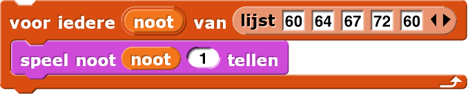
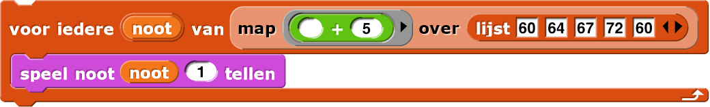
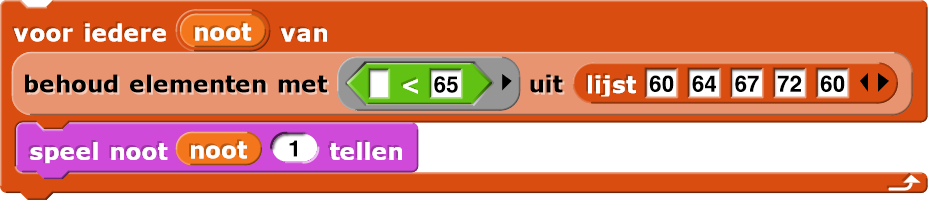
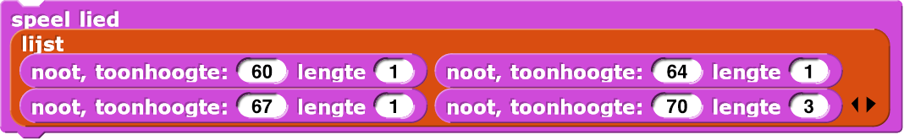
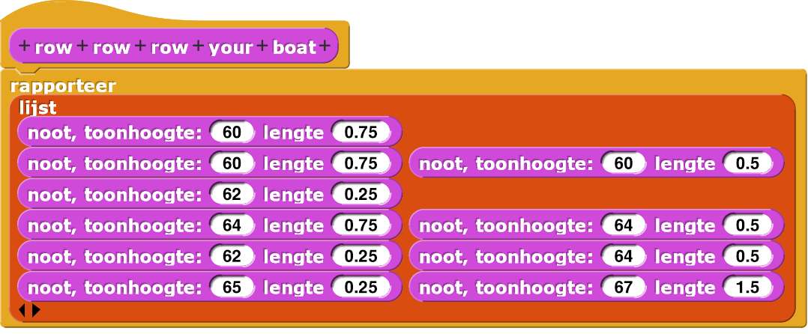
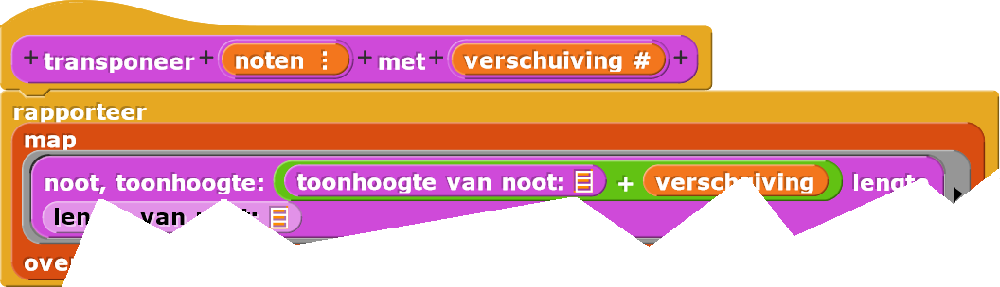

Muziek-Project
In dit project, ga je het speel nootblok in Snap! gebruiken
om muziek te maken terwijl je abstracte data-types en functies van hogere ordes herhaalt.
-
"H3-MusicProject"


Functies van hogere order herhalen met geluid
- Bouw de volgende
speelscripts en vergelijk ze. Voer ieder script een aantal keer uit.- 
- 
- 
De invoerwaardes voor hetspeel nootblok zijn muzikale toonhoogtes. Hoe hoger de waarde,hoe hoger de noot. Je kan als invoer een heel getal tussen 0 en 127 gebruiken. Het getal 60 is de centrale C.
Wil je even terugkijken?
- Je hebt geleerd over
voor iederein Hoofdstuk 2 Les 2. - Je hebt geleerd over
houdin Hoofdstuk 2 Les 3. - Je hebt geleerd over
mapin Hoofdstuk 3 Les 1.
Een abstract datatype maken om muzikale gegevens te structureren
-
Maak een
Toonhoogte is hoe hoog of laag een muzieknoot is; de waarde van de toonhoogte moet in het eerste invoervak van het
speel nootblok.De lengte van een noot is hoe lang de noot gespeeld wordt (het aantal tellen); de waarde van de lengte moet in het tweede invoervak van het
speel nootblok.nootADT (abstract datatype) om de toonhoogte en lengte van iedere noot in een lied bij te houden.-
Maak de constructor:
-
Maak twee selectors:
-
Maak de constructor:
Blokken maken om muziek te spelen
-
Gebruik
voor iederesamen met je selectors om een blok te bouwen dat een lijst met noten als invoer heeft en iedere toonhoogte voor zijn specifieke lengte speelt.
 -
Maak een rapporteur om de noten van een lied te rapporteren dat je zelf leuk vindt. Hier is een
voorbeeld:

-
Test je lied met je
speel liedblok en debug problemen die je tegenkomt.
- Gebruik het blok om de snelheid van hoe snel de noten gespeeld worden aan te passen. Hoe hoger de waarde hoe sneller het lied gespeeld wordt.
BPM staat voor "beats per minuut", een beat is een tel in het Engels.
Getransponeerde muziek
-
 Vergelijk de uitvoer van deze twee scripts die je hierboven al gemaakt hebt. Bespreek met je partner
wat
Vergelijk de uitvoer van deze twee scripts die je hierboven al gemaakt hebt. Bespreek met je partner
wat map + 5doet met het geluid wat je hoort.
- Gebruik het
mapblok samen met je ADT-blokken om een rapporteur te maken die een lijst met noten transponeert (verschuift). Deze rapporteur heeft als invoer een lijst met noten en een getal dat aangeeft hoeveel de noten getransponeerd (verschoven) moeten worden. Het rapporteert de aangepaste noten. Dit blok kan er als volgt uit zien:
Hint laten zien. - Probeer je lied te spelen terwijl je gebruik maakt van je
transponeerblok met verschillende verschuifgetallen zodat je de invloed van het blok kan horen.